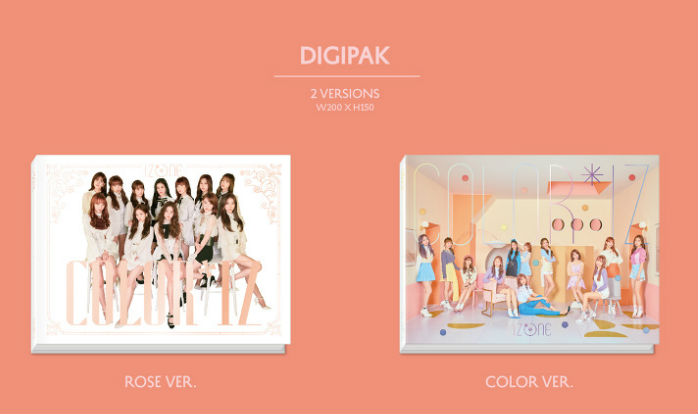
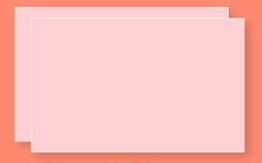

IZ*ONE
デビューアルバム

IZ*ONE デビューアルバム
COLOR*IZ
10月29日 18:00
全世界 発売タイトル曲 「La Vien Rose」
Subタイトル曲「O MY」
Track List
TITLE PV
デビュ曲ー「라비앙로즈 (La Vie en Rose)」
IZONE(アイズワン)のデビュー曲「La Vie en Rose」は中毒性のあるリフレーンが印象的な曲で、あなたと私、みんなの人生を情熱的な「バラ色の人生」にするというメッセージが含まれている曲である
アルバム
構成

1. CDパッケージ
(「ROSE」バージョンと「COLOR」バージョンを選べます )

2. Photo book
(「ROSE」バージョンと「COLOR」バージョンの内容は異なります)

3. メンバー個人写真・トータル12種類
(CD1枚ごとにランダムで個人写真1枚入ってます)

4. メンバーユニット写真(2-3名)・トータル10種類
(CD1枚ごとにランダムでユニット写真1枚入ってます)
5. メンバー1人が写ってるCD・トータル12種類
(ランダムでCD1枚入ってます)

6. ポスター
(「ROSE」バージョンと「COLOR」バージョンの内容は異なります)